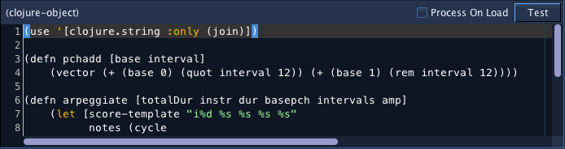

ClojureObject
Introduction
Accepts NoteProcessors: yes

Allows using the Clojure programming language to generate score data. The Clojure interpreter is included with Blue, so ClojureObjects are portable between systems without any external dependencies. Users do not have to install anything further to use this object, and the code will continue to function for the duration of Blue’s existence.
When writing your script to generate notes, assign the string value of the notes to the symbol ‘score’. Blue will then read in the value from that variable and continue processing.
Example 1
(def score "i1 0 2 3 4 5")
The above example shows the simplest script and will generate a single note. If the ClojureObject is set with a start time of 0 and a duration of 2, then it will generate the following score:
i1 0.0 2 3 4 5Example 2
(use '[clojure.string :only (join)])
(defn pchadd [base interval]
(vector (+ (base 0) (quot interval 12)) (+ (base 1) (rem interval 12))))
(defn arpeggiate [totalDur instr dur basepch intervals amp]
(let [score-template "i%d %s %s %s %s"
notes (cycle
(map #(apply format "%d.%02d" (pchadd basepch %1))
(concat intervals (subvec intervals 1 (- (count intervals) 1)))))]
(join \newline
(map #(format score-template instr %1 dur %2 amp)
(range 0 totalDur dur) ; list that will limit the map
notes))))
(def score (arpeggiate blueDuration 1 0.25 [8 0] [0 4 7] -12))
The above example is taken from blue/examples/soundObjects/clojureSoundObject.blue. This script defines an apreggiate function, then calls that assigns the value to score. Notice the use of blueDuration, a symbol that is automatically assigned to the duration of the ClojureObject.
If the ClojureObject is set with a start time of 0 and a duration of 4, then it will generate the following score:
i1 0.0 0.25 8.00 -12
i1 0.25 0.25 8.04 -12
i1 0.5 0.25 8.07 -12
i1 0.75 0.25 8.04 -12
i1 1.0 0.25 8.00 -12
i1 1.25 0.25 8.04 -12
i1 1.5 0.25 8.07 -12
i1 1.75 0.25 8.04 -12
i1 2.0 0.25 8.00 -12
i1 2.25 0.25 8.04 -12
i1 2.5 0.25 8.07 -12
i1 2.75 0.25 8.04 -12
i1 3.0 0.25 8.00 -12
i1 3.25 0.25 8.04 -12
i1 3.5 0.25 8.07 -12
i1 3.75 0.25 8.04 -12
Regarding Processing
Blue processes soundObjects by going through each SoundLayer and generating score for each object within each layer. This is useful to know so that if you are using a ClojureObject that has utility functions that you later use in other ClojureObjects, you should put that utility ClojureObject on the first SoundLayer closest to the top, or at least on a layer above all others that contain ClojureObjects.
Also to note, as a feature, Blue uses a single interpreter instance for processing Clojure code. Therefore, if one ClojureObject has code evaluated, the values from that code can be read by other objects. This allows creating utility ClojureObjects. However, one can use stale values (or values from another project even) if one is not careful to always assign values in the project that require being set for this particular project.
Variables from Blue
The following variables are available from Blue:
- blueDuration
- Duration of the Clojure SoundObject
- blueProjectDir
- The location of the current project’s directory. Includes path separator at end.
Process at Start
There is a checkbox entitled “Process at Start”. Selecting this option will have the script of the ClojureObject run when a .blue project is loaded. This is useful for scripts that act as library functions, but themselves do not generate any notes. For example, you might define a number of score generation utility functions in one ClojureObject that has “Process at Start” enabled. Your other ClojureObject may then use the functions from that ClojureObject Next time you load your project, if that ClojureObject hasn’t been run, your other ClojureObject will not be able to be run either. If you are rendering from the beginning of a project, this won’t be an issue, but if you’re starting work in the middle of a project, you will need to evaluate that utility ClojureObject at least once. You can either do a run from the start at least once, use the “Test” button to have that evaluated, or use “Process at Start” and have Blue ensure it is loaded into the Clojure interpreter when you load your projects.
Using External CLJ Scripts
Blue is able to load external .clj scripts, resolved from the .blue/script/clojure or PROJECT_DIR/script/clojure directory. For example, if you use:
(use 'my.script) This will try to load the script from “/Users/me/.blue/script/clojure/my/script.clj” or “/path/to/blueProject/script/clojure/script.clj”.